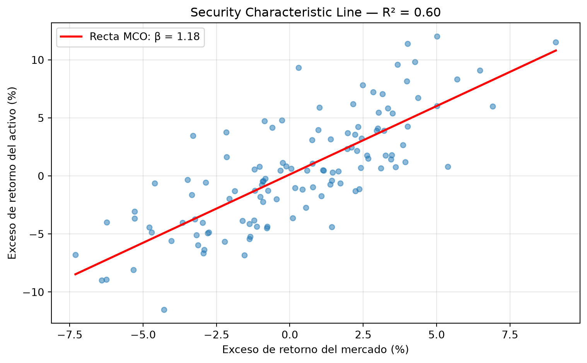

import numpy as np
import pandas as pd
import matplotlib.pyplot as plt
from scipy import stats
import statsmodels.api as sm
rng = np.random.default_rng(42)15 Capítulo 15: Econometría y Modelos Lineales en Finanzas
De la regresión simple a los modelos multifactor
Resumen
La regresión lineal es la herramienta más usada de las finanzas cuantitativas: con ella se estiman betas, se construyen coberturas, se descomponen retornos en factores y se testean estrategias. Este capítulo la desarrolla en serio: cómo especificar un modelo, qué supuestos lo sostienen, cómo leer coeficientes, errores estándar y p-values, y cómo aplicarla al CAPM, a los modelos multifactor y al cálculo de ratios de cobertura. Implementamos MCO desde cero y con statsmodels.
16 Introducción
Si tuvieras que quedarte con una sola herramienta estadística para trabajar en finanzas, sería la regresión lineal. Con ella se responde una familia enorme de preguntas que comparten la misma estructura: ¿cómo se mueve \(y\) cuando se mueve \(x\)?
- ¿Cuánto cae mi acción cuando cae el mercado? (beta del CAPM)
- ¿Cuántos futuros necesito vender para cubrir mi cartera? (ratio de cobertura)
- ¿Mi fondo genera valor o solo cobra caro por exposición al mercado? (alfa)
- ¿Qué parte del retorno se explica por tamaño, valor, momentum? (modelos de factores)
Este capítulo construye la herramienta con el rigor necesario para usarla bien: no alcanza con llamar a una librería; hay que saber qué supone el modelo, cuándo mienten los p-values y cómo se leen los resultados.
17 El modelo lineal: qué afirma exactamente
El modelo de regresión lineal postula que la variable a explicar \(y\) es una combinación lineal de las explicativas más un término de error:
\[y_i = \beta_0 + \beta_1 x_{1i} + \beta_2 x_{2i} + \dots + \beta_k x_{ki} + \varepsilon_i\]
Tres aclaraciones que evitan malentendidos comunes:
- “Lineal” es en los coeficientes, no en las variables. \(y = \beta_0 + \beta_1 x^2\) es un modelo lineal perfectamente válido; podés transformar las variables como quieras.
- El error \(\varepsilon\) no es un defecto: representa todo lo que afecta a \(y\) y no está en el modelo. La pregunta clave será qué propiedades tiene.
- Los \(\beta\) se interpretan “todo lo demás constante”: \(\beta_1\) es el efecto de \(x_1\) sobre \(y\) manteniendo fijas las otras variables. Esta lectura condicional es lo que hace potente (y delicada) a la regresión múltiple.
17.1 Estimación por Mínimos Cuadrados Ordinarios (MCO)
¿Cómo elegir los \(\beta\)? El criterio de MCO (OLS en inglés): minimizar la suma de los errores al cuadrado. Para el caso simple (\(y = \alpha + \beta x + \varepsilon\)) la solución tiene forma cerrada:
\[\hat\beta = \frac{\text{Cov}(x, y)}{\text{Var}(x)}, \qquad \hat\alpha = \bar{y} - \hat\beta \bar{x}\]
La primera fórmula es reveladora: el beta es una covarianza normalizada. Ya la conocés de la teoría de portafolios — no es casualidad, es la misma matemática.
Implementémosla desde cero para desmitificarla:
class RegresionLineal:
"""Regresión lineal simple por MCO, implementada desde cero."""
def fit(self, x, y):
x, y = np.asarray(x), np.asarray(y)
self.n = len(x)
x_mean, y_mean = x.mean(), y.mean()
# Estimadores MCO
self.beta = np.sum((x - x_mean) * (y - y_mean)) / np.sum((x - x_mean) ** 2)
self.alpha = y_mean - self.beta * x_mean
# Bondad de ajuste y errores estándar
y_hat = self.alpha + self.beta * x
residuos = y - y_hat
ss_res = np.sum(residuos ** 2)
ss_tot = np.sum((y - y_mean) ** 2)
self.r2 = 1 - ss_res / ss_tot
# Error estándar del beta y test t (H0: beta = 0)
s2 = ss_res / (self.n - 2) # varianza residual
self.se_beta = np.sqrt(s2 / np.sum((x - x_mean) ** 2))
self.t_beta = self.beta / self.se_beta
self.p_beta = 2 * (1 - stats.t.cdf(abs(self.t_beta), df=self.n - 2))
return self
def resumen(self):
print(f"alpha = {self.alpha:.6f}")
print(f"beta = {self.beta:.4f} (se: {self.se_beta:.4f}, "
f"t: {self.t_beta:.2f}, p-value: {self.p_beta:.4f})")
print(f"R² = {self.r2:.4f}")18 Aplicación 1: el CAPM y la estimación del beta
El CAPM (Capital Asset Pricing Model) afirma que el exceso de retorno esperado de un activo es proporcional al exceso de retorno del mercado:
\[E[R_i] - r_f = \beta_i \left(E[R_m] - r_f\right)\]
Su versión empírica es una regresión lineal sobre datos históricos:
\[\underbrace{R_{i,t} - r_f}_{y} = \alpha + \beta \underbrace{(R_{m,t} - r_f)}_{x} + \varepsilon_t\]
- \(\beta\) mide la sensibilidad al mercado: β=1.3 significa “cuando el mercado sube 1%, este activo sube 1.3% en promedio”.
- \(\alpha\) es el retorno no explicado por el mercado: si es positivo y significativo, el activo rindió más de lo que su riesgo justifica. Todo gestor activo afirma tener alfa; la regresión permite verificarlo.
# Simulamos 10 años de datos mensuales con parámetros conocidos
n = 120
beta_real, alpha_real = 1.3, 0.002
exceso_mercado = rng.normal(0.005, 0.04, n)
exceso_activo = alpha_real + beta_real * exceso_mercado + rng.normal(0, 0.03, n)
modelo = RegresionLineal().fit(exceso_mercado, exceso_activo)
print("=== CAPM estimado (desde cero) ===")
modelo.resumen()
print(f"\nValores reales: alpha={alpha_real}, beta={beta_real}")=== CAPM estimado (desde cero) ===
alpha = 0.001308
beta = 1.1774 (se: 0.0878, t: 13.41, p-value: 0.0000)
R² = 0.6038
Valores reales: alpha=0.002, beta=1.3El beta se recupera con precisión; el alfa, no tanto (mirá su p-value en la salida de statsmodels más abajo). Esa asimetría no es un accidente de esta muestra, es una lección general: detectar alfa exige muchísimos más datos que estimar beta, porque el alfa es una constante pequeña escondida en mucho ruido.
fig, ax = plt.subplots(figsize=(8, 5))
ax.scatter(exceso_mercado * 100, exceso_activo * 100, alpha=0.5, s=25)
x_line = np.linspace(exceso_mercado.min(), exceso_mercado.max(), 50)
ax.plot(x_line * 100, (modelo.alpha + modelo.beta * x_line) * 100, "r-",
linewidth=2, label=f"Recta MCO: β = {modelo.beta:.2f}")
ax.set_xlabel("Exceso de retorno del mercado (%)")
ax.set_ylabel("Exceso de retorno del activo (%)")
ax.set_title(f"Security Characteristic Line — R² = {modelo.r2:.2f}")
ax.legend()
ax.grid(True, alpha=0.3)
plt.tight_layout()
plt.show()
19 Leer una regresión: errores estándar, t y p-values
Los coeficientes estimados son variables aleatorias: con otra muestra habrían dado distinto. La inferencia estadística cuantifica esa incertidumbre, y saber leerla es lo que separa un análisis serio de uno decorativo.
- Error estándar (se): el “desvío típico” del estimador. Un beta de 1.30 con se de 0.07 está bien clavado; con se de 0.60 no sabés casi nada.
- Estadístico t: cuántos errores estándar dista el coeficiente de cero: \(t = \hat\beta / se(\hat\beta)\). Regla mental: \(|t| > 2\) ≈ significativo al 5%.
- p-value: la probabilidad de observar un coeficiente tan grande (en valor absoluto) si el verdadero fuera cero. Un p-value de 0.03 dice: “si el activo no tuviera relación con el mercado, ver este beta sería raro (3%)”.
AdvertenciaLo que el p-value NO dice
El p-value no es “la probabilidad de que el coeficiente sea cero”, ni “la probabilidad de que el modelo esté mal”. Es una afirmación sobre los datos bajo una hipótesis, no sobre la hipótesis. Y con miles de datos, coeficientes económicamente irrelevantes se vuelven “significativos”: significancia estadística ≠ relevancia económica. Mirá siempre la magnitud del coeficiente además de su p-value. Esta distinción reaparecerá con fuerza en el Capítulo 17 (backtesting), donde probar muchas estrategias infla los falsos positivos.
19.1 La versión profesional: statsmodels
Nuestra clase enseña la mecánica; para trabajar en serio usamos statsmodels, que reporta toda la inferencia de una vez:
X = sm.add_constant(exceso_mercado) # agrega la columna del intercepto
ols = sm.OLS(exceso_activo, X).fit()
print(ols.summary(xname=["alpha", "beta_mkt"])) OLS Regression Results
==============================================================================
Dep. Variable: y R-squared: 0.604
Model: OLS Adj. R-squared: 0.600
Method: Least Squares F-statistic: 179.8
Date: Tue, 14 Jul 2026 Prob (F-statistic): 1.77e-25
Time: 20:07:10 Log-Likelihood: 251.24
No. Observations: 120 AIC: -498.5
Df Residuals: 118 BIC: -492.9
Df Model: 1
Covariance Type: nonrobust
==============================================================================
coef std err t P>|t| [0.025 0.975]
------------------------------------------------------------------------------
alpha 0.0013 0.003 0.475 0.636 -0.004 0.007
beta_mkt 1.1774 0.088 13.410 0.000 1.004 1.351
==============================================================================
Omnibus: 3.957 Durbin-Watson: 1.575
Prob(Omnibus): 0.138 Jarque-Bera (JB): 3.816
Skew: 0.436 Prob(JB): 0.148
Kurtosis: 2.946 Cond. No. 32.0
==============================================================================
Notes:
[1] Standard Errors assume that the covariance matrix of the errors is correctly specified.De esta tabla, lo que hay que saber mirar: los coeficientes con sus intervalos de confianza (¿el intervalo del beta contiene 1? ¿el del alfa contiene 0?), el R² (proporción de la varianza explicada), y los p-values. El resto (Durbin-Watson, Jarque-Bera de los residuos) son diagnósticos de supuestos — el tema siguiente.
20 Los supuestos: cuándo confiar en MCO
Los estimadores MCO son insesgados y de mínima varianza (teorema de Gauss-Markov) cuando se cumplen ciertos supuestos. En finanzas, algunos se violan sistemáticamente, y conviene saber cuáles y qué hacer:
| Supuesto | Qué significa | ¿Se cumple en finanzas? | Remedio usual |
|---|---|---|---|
| Linealidad | La relación es lineal en los β | Aproximadamente | Transformar variables |
| Exogeneidad | El error no está correlacionado con las x | El más delicado | Diseño / variables instrumentales |
| Homocedasticidad | Varianza del error constante | No (la volatilidad se agrupa) | Errores robustos (HC/HAC) |
| No autocorrelación | Errores independientes en el tiempo | A veces no | Errores Newey-West (HAC) |
| Normalidad | Errores normales (para inferencia exacta) | No en colas | Muestras grandes ayudan (TCL) |
Las violaciones de homocedasticidad y autocorrelación no sesgan los coeficientes, pero mienten los errores estándar — y con ellos los p-values. La solución estándar en finanzas es usar errores robustos:
# Mismos coeficientes, errores estándar robustos a heterocedasticidad y autocorrelación
ols_robusto = sm.OLS(exceso_activo, X).fit(cov_type="HAC", cov_kwds={"maxlags": 6})
print("Comparación de errores estándar del beta:")
print(f" Clásico (asume homocedasticidad): {ols.bse[1]:.4f}")
print(f" Robusto (Newey-West, HAC): {ols_robusto.bse[1]:.4f}")Comparación de errores estándar del beta:
Clásico (asume homocedasticidad): 0.0878
Robusto (Newey-West, HAC): 0.0794
TipRegla práctica
En regresiones con series de tiempo financieras, reportá errores Newey-West (HAC) por defecto. Si los datos fueran ideales, no perdés nada; si no lo son (lo usual), tus p-values dejan de estar inflados.
21 Regresión múltiple: más de una explicativa
La extensión a varias variables es directa en la práctica (statsmodels recibe una matriz en lugar de un vector) pero cambia la interpretación: cada coeficiente mide el efecto de su variable controlando por las demás. Esto permite responder preguntas imposibles para la regresión simple: ¿este fondo tiene alfa, o su “alfa” es en realidad exposición a las acciones pequeñas?
21.1 Aplicación 2: modelos multifactor (Fama-French)
El CAPM explica los retornos con un solo factor (el mercado). La evidencia empírica encontró sistemáticamente dos anomalías: las empresas chicas rinden más que las grandes, y las baratas (alto valor libro / valor de mercado) más que las caras. Fama y French (1993) propusieron agregarlas como factores:
\[R_i - r_f = \alpha + \beta_m (R_m - r_f) + \beta_s \cdot SMB + \beta_v \cdot HML + \varepsilon\]
donde SMB (Small Minus Big) es el retorno de las chicas menos las grandes, y HML (High Minus Low) el de las baratas menos las caras.
# Simulamos los tres factores y un fondo con exposiciones conocidas
n = 240 # 20 años de datos mensuales
mkt = rng.normal(0.005, 0.040, n)
smb = rng.normal(0.001, 0.025, n)
hml = rng.normal(0.002, 0.025, n)
# Un fondo "value con sesgo small": expuesto a los tres factores, sin alfa real
ret_fondo = 0.0 + 1.1 * mkt + 0.5 * smb + 0.7 * hml + rng.normal(0, 0.02, n)
# Regresión CAPM (solo mercado) vs. modelo de 3 factores
X1 = sm.add_constant(mkt)
X3 = sm.add_constant(np.column_stack([mkt, smb, hml]))
capm_fit = sm.OLS(ret_fondo, X1).fit()
ff_fit = sm.OLS(ret_fondo, X3).fit()
print(f"{'':22}{'CAPM':>10}{'3 factores':>12}")
print(f"{'alpha (mensual)':<22}{capm_fit.params[0]:>10.4f}{ff_fit.params[0]:>12.4f}")
print(f"{'p-value del alpha':<22}{capm_fit.pvalues[0]:>10.3f}{ff_fit.pvalues[0]:>12.3f}")
print(f"{'R²':<22}{capm_fit.rsquared:>10.3f}{ff_fit.rsquared:>12.3f}")
print(f"\nExposiciones estimadas (3F): mkt={ff_fit.params[1]:.2f}, "
f"smb={ff_fit.params[2]:.2f}, hml={ff_fit.params[3]:.2f}") CAPM 3 factores
alpha (mensual) 0.0010 0.0003
p-value del alpha 0.618 0.838
R² 0.696 0.874
Exposiciones estimadas (3F): mkt=1.13, smb=0.46, hml=0.70La lección del ejemplo: bajo el CAPM el fondo puede parecer tener alfa (el modelo de un factor le atribuye al gestor lo que en realidad es exposición a small y value). El modelo de tres factores desenmascara ese alfa: era beta disfrazado. Este análisis —“¿tu alfa sobrevive a los factores?”— es hoy el estándar para evaluar gestores.
21.2 Aplicación 3: ratio de cobertura
Otra pregunta con forma de regresión: tenés una cartera y querés cubrirla vendiendo futuros de un índice. ¿Cuántos? El ratio de cobertura de mínima varianza es, precisamente, el beta de tu cartera contra el instrumento de cobertura:
\[h^* = \frac{\text{Cov}(R_{cartera}, R_{futuro})}{\text{Var}(R_{futuro})} = \beta\]
# Cartera correlacionada con el índice, pero no idéntica
ret_indice = rng.normal(0.0004, 0.012, 500)
ret_cartera = 0.85 * ret_indice + rng.normal(0.0002, 0.006, 500)
h = sm.OLS(ret_cartera, sm.add_constant(ret_indice)).fit().params[1]
var_sin = np.var(ret_cartera)
var_con = np.var(ret_cartera - h * ret_indice)
print(f"Ratio de cobertura óptimo: h* = {h:.3f}")
print(f"Varianza sin cobertura: {var_sin:.6f}")
print(f"Varianza cubierta: {var_con:.6f} "
f"(reducción del {1 - var_con/var_sin:.0%})")Ratio de cobertura óptimo: h* = 0.818
Varianza sin cobertura: 0.000139
Varianza cubierta: 0.000034 (reducción del 76%)Por cada peso de cartera, vendés \(h^*\) pesos de futuro, y la varianza cae en \(R^2\) — el mismo \(R^2\) de la regresión. Todas las piezas encajan.
22 Errores comunes
AdvertenciaTrampas frecuentes
- Regresar precios en lugar de retornos: dos precios que suben con el tiempo siempre parecen “correlacionados” (regresión espuria). Trabajá con retornos; la excepción (cointegración) llega en el capítulo siguiente.
- Leer causalidad en una regresión: MCO mide asociación condicional. “El beta es 1.3” no dice que el mercado cause el retorno del activo, solo que se mueven juntos en esa proporción.
- Omitir variables relevantes: si al fondo value le regresás solo el mercado, el alfa absorbe lo omitido. El sesgo de variable omitida es el error más costoso en evaluación de estrategias.
- Ignorar la inestabilidad temporal del beta: el beta de una empresa cambia con su negocio y su apalancamiento. Estimalo por ventanas móviles antes de asumir que es constante.
- Cazar p-values: correr veinte especificaciones y reportar la significativa es garantía de falsos positivos. Definí el modelo antes de mirar los resultados (más de esto en el Capítulo 17).
23 Ejercicios Propuestos
ImportanteEjercicios
- Beta rodante: estimá el beta del CAPM con una ventana móvil de 24 meses sobre los datos simulados y graficá su evolución con bandas de ±2 errores estándar.
- Potencia del alfa: repetí la estimación del CAPM con muestras de 60, 120, 240 y 600 observaciones. ¿A partir de cuántos datos el alfa verdadero (0.002) se vuelve estadísticamente significativo?
- Regresión múltiple manual: implementá MCO multivariado con la fórmula matricial \(\hat\beta = (X^TX)^{-1}X^Ty\) y verificá que coincide con
statsmodels. - Errores robustos: generá datos con heterocedasticidad (varianza del error proporcional a \(|x|\)) y compará los errores estándar clásicos vs. robustos. ¿Cuál miente?
- Fondo real: bajá los factores de Fama-French (sitio de Ken French) y los retornos de un fondo o ETF, y estimá sus exposiciones y su alfa. ¿Sobrevive el alfa al modelo de 3 factores?
Podés resolver estos ejercicios acá mismo: la celda ejecuta Python en tu navegador, sin instalar nada (la primera ejecución tarda unos segundos mientras carga el entorno; los paquetes que importes se instalan solos).
24 Referencias
Fama, Eugene, y Kenneth French. 1993. «Common Risk Factors in the Returns on Stocks and Bonds». Journal of Financial Economics 33 (1): 3-56.
Newey, Whitney, y Kenneth West. 1987. «A Simple, Positive Semi-definite, Heteroskedasticity and Autocorrelation Consistent Covariance Matrix». Econometrica 55 (3): 703-8.
Sharpe, William F. 1964. «Capital Asset Prices: A Theory of Market Equilibrium under Conditions of Risk». The Journal of Finance 19 (3): 425-42.
Wooldridge, Jeffrey. 2019. Introductory Econometrics: A Modern Approach. 7.ª ed. Cengage.